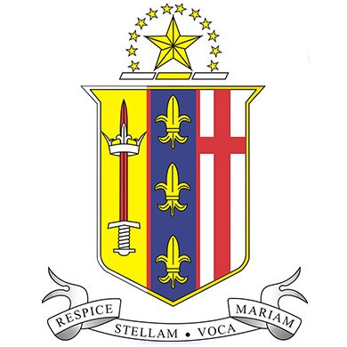

Education

University of Canterbury · Christchurch, NZ
Expected Graduation Nov 2028Bachelor of Engineering (Honours) · Electrical & Electronics Engineering
Concentrations: Embedded Systems, Power Electronics
Relevant Coursework: Power and Analogue Electronics · Computer Systems · Principles of Electrical Systems · Principles of Electronics and Devices · Principles of Mechatronics · Circuits and Signals · Electrical and Computer Engineering Design

St Bernard's College · Wellington, NZ
National Certificate of Educational Achievement
Highlights
ICAS Mathematics with Distinction
Top ~1% in Earth and Space Science, Lees Landscaping Cup
Division 1 Esports Champion, represented Wellington nationally
Activities: Prefect Representative Committee, Youth for Christ Wellington, Student Volunteer Army, Regional Debating Club, Chess Club